Supplied unofficial study solution, not an official GTU answer key. Answers and teaching diagrams have not been independently verified. Use Enlarge image for small details.આ આપેલો બિનસત્તાવાર અભ્યાસ ઉકેલ છે, સત્તાવાર GTU જવાબવહી નથી. જવાબો અને આકૃતિઓની સ્વતંત્ર ચકાસણી થઈ નથી. વાંચવા માટે ચિત્ર મોટું કરો.
Electrical Machines – Iઇલેક્ટ્રિકલ મશીન્સ – I
Complete paper coverage: all 28 answer parts are included. Q1(c) and Q2–Q5 include complete OR alternatives; both choices are answered. One paper with English and Gujarati — use the language buttons above to switch. Gujarati is improved and more detailed (about 70% Gujarati) with main English keywords kept direct (Commutator, Armature Reaction, Back EMF, Three-point Starter, Transformer, Buchholz Relay, Vector Group, etc.). Same content in both languages, only language changes.આખા paperનો સમાવેશ: બધા 28 જવાબ ભાગો છે. Q1(c) અને Q2–Q5માં સંપૂર્ણ OR વિકલ્પો છે; બંને પસંદગીઓના જવાબ છે. એક જ paperમાં English અને ગુજરાતી છે — ઉપરના English / ગુજરાતી button દબાવીને ભાષા બદલો. ગુજરાતી હવે વધુ સુધારેલું અને વિગતવાર છે (લગભગ 70% ગુજરાતી) અને મુખ્ય English keywords direct રાખેલા છે (Commutator, Armature Reaction, Back EMF, Three-point Starter, Transformer, Buchholz Relay, Vector Group, વગેરે). બંને ભાષામાં same content છે, ફક્ત ભાષા બદલાય છે.
How to read: tap any card to open its answer. Marks-wise depth: 3-mark answers are concise, 4-mark medium, 7-mark detailed with derivations, diagrams and step-by-step numericals. Formulas are in blue boxes, final answers in green boxes. Diagrams are original teaching schematics.કેવી રીતે વાંચવું: જવાબ ખોલવા કોઈપણ card પર ટેપ કરો. ગુણ પ્રમાણે ઊંડાણ: ૦૩ ગુણના જવાબો ટૂંકા, ૦૪ ગુણ મધ્યમ, ૦૭ ગુણ વિગતવાર — derivation, diagram અને step-by-step ગણતરી સાથે. સૂત્રો વાદળી બોક્સમાં, અંતિમ જવાબ લીલા બોક્સમાં છે. આકૃતિઓ મૂળ શિક્ષણ આકૃતિઓ છે.
Q1 · DC Generatorsપ્ર.1 · DC જનરેટર
Q.1 (a) State the constructional parts of a D.C. generator and explain the role of commutator. (3 marks)પ્ર.1 (અ) D.C. જનરેટરના ભાગો લખો અને કમ્યુટેટરનું કાર્ય સમજાવો. (૦૩ ગુણ)3 marks૦૩ ગુણ
Constructional parts (as per 3-mark answer):
- Yoke — outer magnetic frame (cast steel / fabricated steel) that supports poles and carries return flux.
- Pole core & pole shoe — laminated steel; shoe spreads flux uniformly in air-gap and holds field coil.
- Field winding — copper coils on poles; produces main flux Φ. Shunt = many thin turns, Series = few thick turns.
- Armature core — slotted laminated silicon-steel drum on shaft; reduces eddy-current loss.
- Armature winding — copper conductors in slots, connected as lap or wave winding to commutator segments.
- Commutator — insulated copper segments (mica between) — rotating mechanical rectifier (see below).
- Brushes & brush gear — carbon/graphite brushes with spring pressure; sliding contact to external circuit.
- Shaft, bearings, end covers, fan, terminal box — mechanical support, cooling, connections.
Role of commutator (mechanical rectifier + tap changer): Each armature coil generates alternating EMF as it rotates (e = Blv sinθ). The split-ring commutator reverses the coil's connection to the brushes every 180°, so the brush polarity stays unidirectional. With many coils/segments the ripple becomes small and the terminal voltage is essentially DC. In motor operation the same switching keeps torque unidirectional.
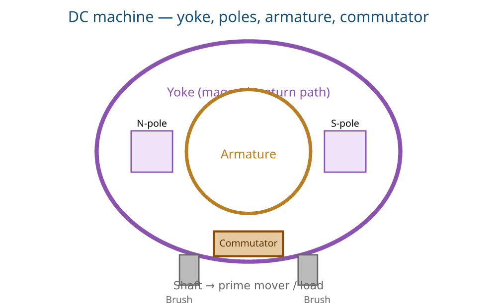
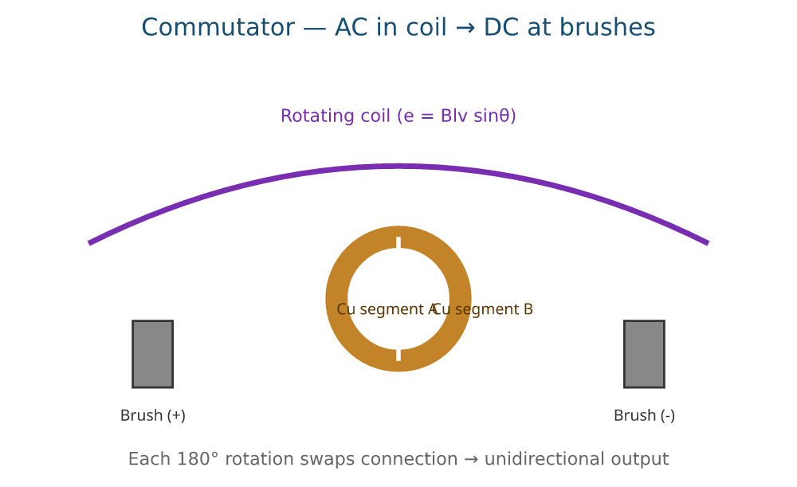
Constructional parts (૦૩ ગુણ મુજબ મુદ્દાસર જવાબ):
- Yoke (યોક) — બહારની magnetic frame છે (cast steel / fabricated steel); poles ને ટેકો આપે છે અને flux નો return path બનાવે છે.
- Pole core & pole shoe — laminated steel ના બનેલા; shoe હવાઈ-gap માં flux ને સમાન રીતે ફેલાવે છે અને field coil ને પકડી રાખે છે.
- Field winding (ફીલ્ડ વાઇન્ડિંગ) — poles પર copper ના coils; મુખ્ય flux Φ ઉત્પન્ન કરે છે. Shunt માં ઘણા પાતળા turns, Series માં થોડા જાડા turns હોય છે.
- Armature core (આર્મેચર કોર) — shaft પર slotted laminated silicon-steel ડ્રમ; eddy-current loss ઘટાડે છે.
- Armature winding (આર્મેચર વાઇન્ડિંગ) — slots માં copper conductors, lap અથવા wave winding તરીકે commutator segments સાથે જોડેલા.
- Commutator (કમ્યુટેટર) — mica insulation વચ્ચે insulated copper segments — ફરતો mechanical rectifier.
- Brushes & brush gear (બ્રશ) — carbon/graphite બ્રશ spring pressure સાથે; બહારના circuit સાથે sliding contact કરે છે.
- Shaft, bearings, end covers, fan, terminal box — યાંત્રિક ટેકો, cooling અને connections માટે.
Commutator ની ભૂમિકા (mechanical rectifier + tap changer): દરેક armature coil ફરતી વખતે alternating EMF ઉત્પન્ન કરે છે (e = Blv sinθ). Split-ring commutator દર 180° એ coil નું brush સાથેનું જોડાણ ઉલટાવી દે છે, જેથી brush ની polarity એક જ દિશામાં (unidirectional) રહે છે. ઘણા coils/segments હોવાથી ripple નાનો થઈ જાય છે અને terminal voltage લગભગ શુદ્ધ DC મળે છે. Motor માં પણ આ જ switching થી torque એક જ દિશામાં રહે છે.
Q.1 (b) Define armature reaction and list two methods to reduce its effects. (4 marks)પ્ર.1 (બ) આર્મેચર રિએક્શનની વ્યાખ્યા આપો અને તેના પ્રભાવ ઘટાડવાના બે ઉપાયો લખો. (૦૪ ગુણ)4 marks૦૪ ગુણ
Definition: Armature reaction is the effect of armature MMF on the main field flux. The armature current creates its own magnetic field which distorts and (partly) demagnetises the main pole flux.
Effects (why it matters):
- Cross-magnetising — flux density increases at one pole tip, decreases at the other → distorted air-gap flux, poor commutation.
- Demagnetising — net reduction of useful flux due to saturation at the strengthened tip (total flux slightly falls).
- Shift of magnetic neutral axis (MNA) — brushes set on geometric neutral axis (GNA) now spark; effective EMF slightly reduced.
Two methods to reduce (write any two for full marks):
- Interpoles (auxiliary poles) — small poles between main poles, winding in series with armature; produce counter-MMF to cancel armature MMF in commutating zone → sparkless commutation.
- Compensating winding — conductors embedded in pole-shoe slots, also in series with armature, directly neutralise armature MMF under pole arc — used in large machines with heavy overloads.
- Alternative accepted: shifting brushes to new MNA (old method, now rarely used alone) or increasing air-gap / using high-reluctance pole tips (limited effect).
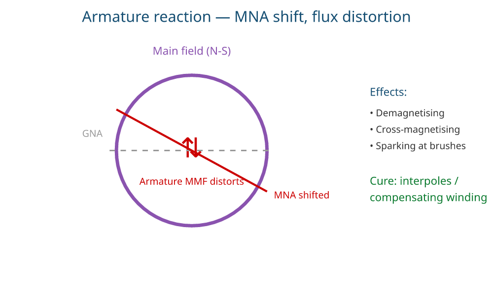
વ્યાખ્યા: Armature reaction એટલે armature MMF ની main field flux પર અસર. Armature current પોતાનું magnetic field બનાવે છે જે મુખ્ય pole flux ને distort કરે છે અને અંશતઃ demagnetise કરે છે.
અસરો (શા માટે મહત્વનું છે):
- Cross-magnetising — એક pole tip પર flux density વધે, બીજા પર ઘટે → air-gap flux distorted, commutation ખરાબ થાય.
- Demagnetising — strengthened tip પર saturation ને કારણે ઉપયોગી flux થોડો ઘટે.
- Magnetic neutral axis (MNA) નું ખસવું — geometric neutral axis (GNA) પર રાખેલા brushes હવે spark કરે; અસરકારક EMF થોડો ઘટે.
ઘટાડવાના બે ઉપાયો (કોઈપણ બે લખો તો પૂરા ગુણ):
- Interpoles (સહાયક poles) — મુખ્ય poles વચ્ચે નાના poles, winding armature સાથે series માં; commutating zone માં armature MMF ને cancel કરતો counter-MMF બનાવે → spark વગર commutation.
- Compensating winding — pole-shoe ના slots માં conductors, પણ armature સાથે series માં, pole arc નીચે armature MMF ને સીધું neutralise કરે — મોટા machines માં heavy overloads માટે વપરાય.
- વૈકલ્પિક સ્વીકૃત: brushes ને નવા MNA પર ખસેડવા (જૂની પદ્ધતિ) અથવા air-gap વધારવો / high-reluctance pole tips (મર્યાદિત અસર).
Q.1 (c) Derive the EMF equation of a D.C. generator and show the meaning of each term. (7 marks)પ્ર.1 (ક) D.C. જનરેટરનું EMF સમીકરણ સાબિત કરો અને દરેક ઘટકનો અર્થ સમજાવો. (૦૭ ગુણ)7 marks૦૭ ગુણ
Assumptions: Uniform air-gap flux per pole Φ (Wb), steady speed N (rpm), total armature conductors Z, number of poles P, parallel paths A (A = P for lap, A = 2 for wave).
Derivation step-by-step:
- Flux cut by one conductor in one revolution = P·Φ (each pole contributes Φ).
- Time for one revolution = 60N seconds.
- Average EMF per conductor = PΦ60/N = PΦN60 volts.
- Conductors in series per parallel path = ZA.
- Total generated EMF (no-load) Eg = PΦNZ60A volts
Meaning of terms:
| Symbol | Meaning | Unit |
|---|---|---|
| P | Number of poles | — |
| Φ | Flux per pole (useful) | Wb |
| N | Speed of armature | rpm |
| Z | Total armature conductors | — |
| A | Parallel paths (P for lap, 2 for wave) | — |
| Eg | Generated EMF (proportional to ΦN) | V |
Key insights for 7 marks:
- Eg ∝ ΦN — if field weakens (Φ↓), Eg falls at same speed; if speed rises, Eg rises linearly (before saturation).
- Lap winding (A=P) gives higher current rating, lower voltage; wave (A=2) gives higher voltage, lower current for same machine.
- Terminal voltage V = Eg − IaRa − brush drop − (armature reaction effect). No-load Eg is the ideal internal voltage.
ધારણાઓ: પ્રતિ pole સમાન air-gap flux Φ (Wb), સ્થિર speed N (rpm), કુલ armature conductors Z, poles ની સંખ્યા P, parallel paths A (lap માટે A = P, wave માટે A = 2).
Step-by-step તારણ:
- એક revolution માં એક conductor દ્વારા કપાતો flux = P·Φ (દરેક pole Φ આપે છે).
- એક revolution નો સમય = 60N સેકન્ડ.
- પ્રતિ conductor સરેરાશ EMF = PΦ60/N = PΦN60 વોલ્ટ.
- પ્રતિ parallel path series માં conductors = ZA.
- કુલ generated EMF (no-load) Eg = PΦNZ60A વોલ્ટ
દરેક term નો અર્થ:
| Symbol | અર્થ | Unit |
|---|---|---|
| P | Poles ની સંખ્યા | — |
| Φ | પ્રતિ pole ઉપયોગી flux | Wb |
| N | Armature ની speed | rpm |
| Z | કુલ armature conductors | — |
| A | Parallel paths (lap માટે P, wave માટે 2) | — |
| Eg | Generated EMF (ΦN ના પ્રમાણમાં) | V |
૦૭ ગુણ માટે મુખ્ય મુદ્દાઓ:
- Eg ∝ ΦN — field નબળો પડે (Φ↓) તો એ જ speed એ Eg ઘટે; speed વધે તો Eg linear વધે (saturation પહેલાં).
- Lap winding (A=P) માં current rating વધુ, voltage ઓછો; wave (A=2) માં voltage વધુ, current ઓછો — એ જ machine માટે.
- Terminal voltage V = Eg − IaRa − brush drop − (armature reaction અસર). No-load Eg એ ideal internal voltage છે.
Q.1 (c) OR With a neat sketch, explain open-circuit and load characteristics of a D.C. shunt generator. (7 marks)પ્ર.1 (ક) OR સ્વચ્છ આકૃતિ સાથે D.C. શંટ જનરેટરની ઓપન-સર્કિટ અને લોડ લાક્ષણિકતાઓ સમજાવો. (૦૭ ગુણ)7 marks૦૭ ગુણ
Connections: Shunt field winding in parallel with armature. Field current If = V/Rsh. Armature supplies both load current IL and field: Ia = IL + If. Residual magnetism + correct field polarity needed for self-excitation.
1. Open-circuit characteristic (OCC) / magnetisation curve:
- Conducted at constant rated speed, load terminals open (IL=0). Field current If varied by rheostat, terminal voltage Vo (= Eg at no-load, neglecting small IfRa) recorded.
- Curve starts from residual voltage (small E due to remanent flux) then rises linearly, bends due to saturation, and flattens — typical S-shape.
- Critical field resistance line (V = IfRsh) is tangent to OCC; if Rsh > critical, machine fails to excite.
2. Load characteristics (at nearly constant speed, driven by prime mover):
- Internal characteristic: Eg vs Ia — falls slowly due to armature reaction demagnetisation and speed drop.
- External characteristic: Vt vs IL — falls more steeply because Vt = Eg − IaRa − brush drop. Shunt generator has drooping characteristic but small regulation.
- Beyond certain load, voltage collapses (field current falls with Vt → further fall → instability). Short-circuit current is limited but voltage is near zero.
Importance: OCC determines critical resistance and voltage build-up; external characteristic decides suitability for loads needing stable voltage (shunt generator → battery charging, excitation, with voltage regulator).
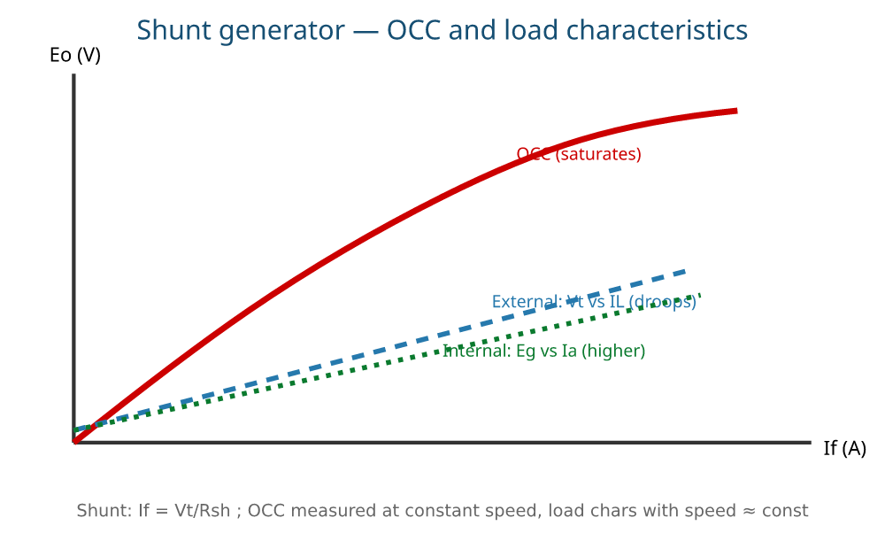
Connections (જોડાણ): Shunt field winding armature સાથે parallel માં. Field current If = V/Rsh. Armature load current IL અને field બંનેને supply કરે: Ia = IL + If. Self-excitation માટે residual magnetism + સાચી field polarity જરૂરી છે.
1. Open-circuit characteristic (OCC) / magnetisation curve:
- Constant rated speed એ, load terminals open (IL=0) રાખીને કરવામાં આવે. Rheostat થી field current If બદલો, terminal voltage Vo (= no-load પર Eg, નાનો IfRa અવગણતા) નોંધો.
- Curve residual voltage (remanent flux ને કારણે નાનો E) થી શરૂ થાય, પછી linear વધે, saturation ને કારણે વળે અને flat થાય — લાક્ષણિક S-shape.
- Critical field resistance line (V = IfRsh) OCC ને tangent છે; જો Rsh > critical હોય તો machine excite જ ન થાય.
2. Load characteristics (લગભગ constant speed એ, prime mover દ્વારા):
- Internal characteristic: Eg vs Ia — armature reaction demagnetisation અને speed drop ને કારણે ધીમે ધીમે ઘટે.
- External characteristic: Vt vs IL — વધુ તીવ્રતાથી ઘટે કારણ કે Vt = Eg − IaRa − brush drop. Shunt generator ની characteristic drooping છે પણ regulation નાનું છે.
- ચોક્કસ load પછી voltage collapse થાય (Vt ઘટે → field current ઘટે → વધુ ઘટાડો → instability). Short-circuit current મર્યાદિત પણ voltage લગભગ zero.
મહત્વ: OCC થી critical resistance અને voltage build-up નક્કી થાય; external characteristic થી સ્થિર voltage જોઈતા loads માટે યોગ્યતા નક્કી થાય (shunt generator → battery charging, excitation, voltage regulator સાથે).
Q2 · DC Motors and Startersપ્ર.2 · DC મોટર અને સ્ટાર્ટર
Q.2 (a) Define back EMF and write its formula. (3 marks)પ્ર.2 (અ) બેક EMF ની વ્યાખ્યા આપો અને તેનું સૂત્ર લખો. (૦૩ ગુણ)3 marks૦૩ ગુણ
Definition (Lenz's law inside motor): When armature rotates in main field, conductors cut flux and an EMF is induced in them. By Lenz's law this induced EMF opposes the applied terminal voltage — it is called back EMF (counter EMF) Eb.
Voltage equation (motor): V = Eb + IaRa + brush drop + stray. So armature current is
At start N≈0 → Eb≈0 → Ia very large (hence starter needed). As speed builds, Eb rises, Ia falls — motor self-regulates. Eb is proportional to speed (Eb ∝ ΦN).
વ્યાખ્યા (મોટરની અંદર Lenz's law): જ્યારે armature મુખ્ય field માં ફરે છે ત્યારે conductors flux ને કાપે છે અને તેમાં EMF induce થાય છે. Lenz's law મુજબ આ induced EMF applied terminal voltage નો વિરોધ કરે છે — તેને back EMF (counter EMF) Eb કહેવાય છે.
Voltage equation (મોટર): V = Eb + IaRa + brush drop + stray. તેથી armature current
Start વખતે N≈0 → Eb≈0 → Ia ખૂબ મોટો (એટલે starter જરૂરી). Speed વધતા Eb વધે, Ia ઘટે — મોટર પોતે જ regulate થાય છે. Eb speed ના પ્રમાણમાં છે (Eb ∝ ΦN).
Q.2 (b) Explain the function and working of a three-point starter with diagram. (4 marks)પ્ર.2 (બ) થ્રી-પોઇન્ટ સ્ટાર્ટરનું કાર્ય અને કાર્યપ્રણાલી આકૃતિ સાથે સમજાવો. (૦૪ ગુણ)4 marks૦૪ ગુણ
Function: Limit high starting armature current (since Eb=0 at start, Ia=V/Ra would be 10–20× rated) and provide no-volt and overload protection for DC shunt/compound motors.
Construction — three terminals L, F, A:
- L (Line) → supply through overload coil and handle to starting resistance.
- F (Field) → shunt field + no-volt coil (NVC) in series.
- A (Armature) → armature + series starting resistor studs.
Working (step-by-step):
- Handle at OFF: full resistance in armature circuit. Move to first stud → small current flows, motor starts with limited Ia.
- As motor accelerates, Eb builds; handle moved slowly stud-by-stud, cutting resistance. Spring tries to return handle to OFF.
- In RUN position, resistance fully cut out; handle held by electromagnet (NVC) energised by field current.
- No-volt release: If supply fails or field opens (field current → 0), NVC de-energises, handle springs back to OFF — prevents direct-on-line restart with no back EMF.
- Overload release (OLC): Excess armature current energises solenoid that short-circuits NVC → handle released → protection.
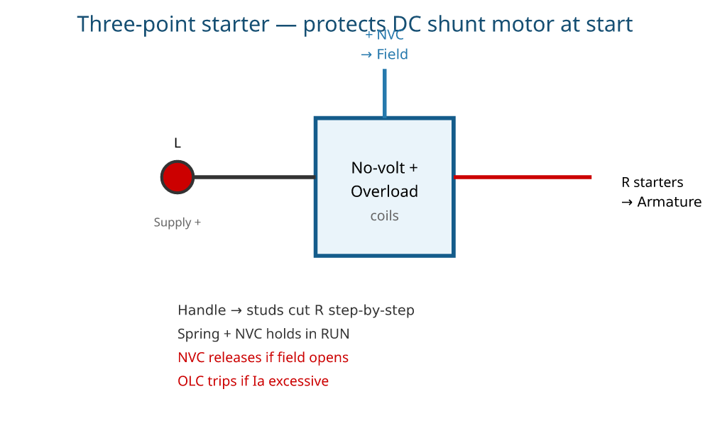
કાર્ય: વધુ પડતો starting armature current મર્યાદિત કરવો (Eb=0 હોવાથી Ia=V/Ra rated કરતાં 10–20 ગણો થાય) અને DC shunt/compound motors માટે no-volt અને overload protection આપવું.
રચના — ત્રણ terminals L, F, A:
- L (Line) → overload coil અને handle થઈને starting resistance તરફ.
- F (Field) → shunt field + no-volt coil (NVC) series માં.
- A (Armature) → armature + series starting resistor studs.
કાર્યપ્રણાલી (step-by-step):
- Handle OFF પર: armature circuit માં પૂરો resistance. પહેલા stud પર લઈ જાવ → નાનો current વહે, મર્યાદિત Ia સાથે motor start થાય.
- Motor accelerate થતાં Eb બને; handle ધીમે ધીમે stud-by-stud આગળ લઈ જાવ, resistance કપાતો જાય. Spring handle ને OFF તરફ ખેંચે છે.
- RUN position માં resistance સંપૂર્ણ કપાઈ જાય; handle electromagnet (NVC) દ્વારા પકડાયેલો રહે છે જે field current થી energised છે.
- No-volt release: જો supply જાય અથવા field ખુલી જાય (field current → 0), NVC de-energise થાય, handle spring થી OFF પર પાછો આવે — back EMF વગર direct-on-line restart અટકે.
- Overload release (OLC): વધુ પડતો armature current solenoid ને energise કરે જે NVC ને short કરે → handle છૂટે → protection મળે.
Q.2 (c) Explain speed-control methods of a D.C. shunt motor with necessary equations. (7 marks)પ્ર.2 (ક) D.C. શંટ મોટરના સ્પીડ-કંટ્રોલ પદ્ધતિઓ જરૂરી સમીકરણ સાથે સમજાવો. (૦૭ ગુણ)7 marks૦૭ ગુણ
Speed equation (basis):
Shunt motor has nearly constant Φ (If=V/Rsh). Speed can be changed by varying Φ, V, or Ra drop.
Method 1 — Field (flux) control (rheostat in field):
- Increase field rheostat Rrh → If = V/(Rsh+Rrh) falls → Φ falls → N rises (N ∝ 1/Φ).
- Used to obtain speeds above base speed. Simple, efficient (field current small), but weak field reduces torque capability and may cause instability if over-weakened.
Method 2 — Armature resistance control (rheostat in series with armature):
- Insert Rext in armature: Eb = V − Ia(Ra+Rext) → for same load torque (same Ia), N falls.
- Used to obtain speeds below base speed. Very inefficient — Ia2Rext heat loss; suitable only for short/intermittent speed reduction.
Method 3 — Armature voltage control (modern, not rheostat):
- Vary terminal voltage V (Ward-Leonard, chopper, controlled rectifier) keeping field constant. N ∝ V approximately → smooth, efficient control from zero to base speed, with constant torque.
Comparison (important for 7M): Field control = above base, efficient, constant HP; Armature-R control = below base, lossy, constant torque but poor efficiency; Voltage control = best for wide range, needs extra supply. Never weaken shunt field excessively — motor may overspeed.
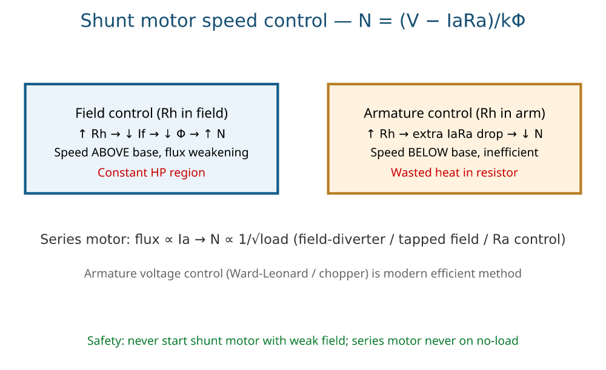
Speed equation (પાયો):
Shunt motor માં Φ લગભગ constant છે (If=V/Rsh). Speed Φ, V અથવા Ra drop બદલીને બદલી શકાય છે.
પદ્ધતિ 1 — Field (flux) control (field માં rheostat):
- Field rheostat Rrh વધારો → If = V/(Rsh+Rrh) ઘટે → Φ ઘટે → N વધે (N ∝ 1/Φ).
- Base speed કરતાં વધુ speed મેળવવા વપરાય. સરળ, કાર્યક્ષમ (field current નાનો), પણ વધુ પડતો weak field torque ક્ષમતા ઘટાડે અને instability લાવી શકે.
પદ્ધતિ 2 — Armature resistance control (armature સાથે series માં rheostat):
- Armature માં Rext ઉમેરો: Eb = V − Ia(Ra+Rext) → એ જ load torque (એ જ Ia) માટે N ઘટે.
- Base speed કરતાં ઓછી speed માટે વપરાય. ખૂબ બિનકાર્યક્ષમ — Ia2Rext ઉષ્મા નુકસાન; માત્ર ટૂંકા / વચગાળાના speed ઘટાડા માટે યોગ્ય.
પદ્ધતિ 3 — Armature voltage control (આધુનિક, rheostat નહીં):
- Terminal voltage V બદલો (Ward-Leonard, chopper, controlled rectifier) field constant રાખી. N ∝ V લગભગ → zero થી base speed સુધી smooth, કાર્યક્ષમ control, constant torque સાથે.
સરખામણી (૦૭ ગુણ માટે મહત્વનું): Field control = base થી ઉપર, કાર્યક્ષમ, constant HP; Armature-R control = base થી નીચે, નુકસાનવાળું, constant torque પણ ઓછી efficiency; Voltage control = wide range માટે શ્રેષ્ઠ, વધારાનો supply જોઈએ. Shunt field ને ક્યારેય વધુ પડતું weak ન કરો — motor overspeed થઈ શકે.
Q.2 (a) OR List the factor affecting speed of DC Motor. (3 marks)પ્ર.2 (અ) OR DC મોટરની ગતિને અસર કરતા પરિબળો લખો. (૦૩ ગુણ)3 marks૦૩ ગુણ
From speed equation N = (V − IaRa)/kΦ:
- Flux per pole Φ — N ∝ 1/Φ (field current If). Weak field → higher speed; strong field → lower speed. Series motor flux varies with load.
- Terminal voltage V — N ∝ V (if Φ constant). Higher supply voltage → higher speed (voltage control).
- Armature circuit resistance / voltage drop IaRa — more drop (external R or heavy load Ia) → lower Eb → lower speed.
Additional factors (often listed): Load torque (through Ia), number of poles/winding (k), brush drop, temperature (Ra changes), supply frequency does not apply to DC (unlike AC motors).
Speed equation N = (V − IaRa)/kΦ પરથી:
- Flux per pole Φ — N ∝ 1/Φ (field current If). Weak field → વધુ speed; strong field → ઓછી speed. Series motor નો flux load સાથે બદલાય.
- Terminal voltage V — N ∝ V (જો Φ constant હોય). વધુ supply voltage → વધુ speed (voltage control).
- Armature circuit resistance / voltage drop IaRa — વધુ drop (external R અથવા ભારે load Ia) → ઓછો Eb → ઓછી speed.
વધારાના પરિબળો (ઘણીવાર list માં): Load torque (Ia દ્વારા), poles/winding ની સંખ્યા (k), brush drop, temperature (Ra બદલાય), DC હોવાથી supply frequency લાગુ નથી (AC motors થી અલગ).
Q.2 (b) OR A 250 V DC Shunt Motor takes 20 A from supply. Rsh=250Ω, Ra=1Ω. Find (1) armature current (2) back EMF. (4 marks)પ્ર.2 (બ) OR 250 V DC શંટ મોટર supply માંથી 20 A લે છે. Rsh=250Ω, Ra=1Ω હોય તો (1) armature current (2) back EMF શોધો. (૦૪ ગુણ)4 marks૦૪ ગુણ
Given: V = 250 V, IL = 20 A (supply line current), Rsh = 250 Ω, Ra = 1 Ω. Shunt motor: IL = Ia + Ish.
Step 1 — Shunt field current
Step 2 — Armature current
Step 3 — Back EMF (motor voltage equation: V = Eb + IaRa)
Check: Eb < V (231 < 250) — correct for motoring. Armature copper loss = Ia2Ra = 361 W.
આપેલું: V = 250 V, IL = 20 A (supply line current), Rsh = 250 Ω, Ra = 1 Ω. Shunt motor માં IL = Ia + Ish.
Step 1 — Shunt field current
Step 2 — Armature current
Step 3 — Back EMF (motor voltage equation: V = Eb + IaRa)
ચકાસણી: Eb < V (231 < 250) — motoring માટે સાચું. Armature copper loss = Ia2Ra = 361 W.
Q.2 (c) OR Draw and explain Starting and Running Characteristics of DC Series Motor. (7 marks)પ્ર.2 (ક) OR DC સિરીઝ મોટરની સ્ટાર્ટિંગ અને રનિંગ લાક્ષણિકતાઓ દોરો અને સમજાવો. (૦૭ ગુણ)7 marks૦૭ ગુણ
Series motor peculiarity: Field winding in series with armature → flux Φ ∝ Ia (unsaturated). Hence speed N = (V−IaR)/kΦ ∝ (V−IaR)/Ia → N very high at light load, low at heavy load.
1. Starting characteristics (high torque at start):
- Torque T ∝ ΦIa ∝ Ia2 (before saturation) → parabolic rise. Series motor develops very high starting torque (2–3× rated) — ideal for traction, cranes, hoists.
- Starting current limited by starter resistance; otherwise Ia = V/Ra would be destructive.
2. Running characteristics:
- Speed vs Ia (or load): N falls sharply with increasing Ia; at no-load (small Ia → tiny Φ) speed tends to dangerously high → series motor must never be run on no-load / uncoupled.
- Torque vs Ia: Initially T ∝ Ia2, after saturation T ∝ Ia (linear). Shows high overload capacity.
- Speed vs Torque: Hyperbolic — N ∝ 1/√T unsaturated. Speed regulation is poor (large drop from no-load to full-load).
Importance: Traction (electric trains, trolleys), cranes, conveyors — where high starting torque and load-dependent speed is acceptable. Belt-drive forbidden (belt break = no-load!).
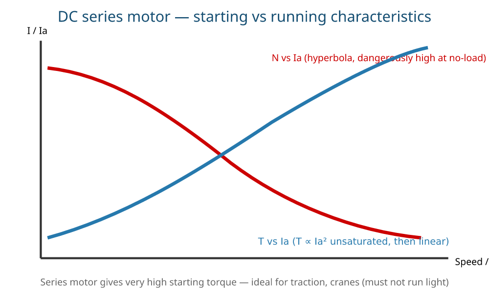
Series motor ની વિશેષતા: Field winding armature સાથે series માં → flux Φ ∝ Ia (unsaturated). તેથી speed N = (V−IaR)/kΦ ∝ (V−IaR)/Ia → હળવા load એ speed ખૂબ વધારે, ભારે load એ ઓછી.
1. Starting characteristics (start વખતે વધુ torque):
- Torque T ∝ ΦIa ∝ Ia2 (saturation પહેલાં) → parabolic વધારો. Series motor ખૂબ વધારે starting torque (rated કરતાં 2–3 ગણો) વિકસાવે — traction, cranes, hoists માટે ideal.
- Starting current starter resistance થી મર્યાદિત કરવો પડે; નહીં તો Ia = V/Ra વિનાશક થાય.
2. Running characteristics:
- Speed vs Ia (અથવા load): Ia વધતાં N તીવ્રતાથી ઘટે; no-load (નાનો Ia → નાનો Φ) પર speed જોખમી રીતે વધારે થઈ જાય → series motor ને ક્યારેય no-load / uncoupled ન ચલાવવી.
- Torque vs Ia: શરૂઆતમાં T ∝ Ia2, saturation પછી T ∝ Ia (linear). Overload ક્ષમતા વધુ દેખાડે.
- Speed vs Torque: Hyperbolic — N ∝ 1/√T unsaturated. Speed regulation નબળું (no-load થી full-load સુધી મોટો ઘટાડો).
મહત્વ: Traction (electric trains, trolleys), cranes, conveyors — જ્યાં વધુ starting torque અને load-dependent speed ચાલે. Belt-drive મનાઈ (belt તૂટે = no-load!).
Q3 · Transformers and DC Motor Principlesપ્ર.3 · ટ્રાન્સફોર્મર અને DC મોટર સિદ્ધાંત
Q.3 (a) Compare core-type and shell-type transformers. (3 marks)પ્ર.3 (અ) કોર-ટાઇપ અને શેલ-ટાઇપ ટ્રાન્સફોર્મર વચ્ચે તફાવત બતાવો. (૦૩ ગુણ)3 marks૦૩ ગુણ
| Point | Core-type | Shell-type |
|---|---|---|
| Core | Two-limb (window) core; windings surround core limbs | Three-limb core; core surrounds windings (central limb carries windings) |
| Windings | Concentric (LV inside, HV outside on each limb) | Sandwich / interleaved LV-HV sections on central limb |
| Flux path | Single magnetic circuit | Two return paths via outer limbs (flux splits) |
| Cooling / bracing | Simple, natural cooling; good accessibility for maintenance | Better mechanical bracing against short-circuit forces; compact |
| Application | High-voltage power transformers | Low-voltage, distribution, special furnace transformers |
Both follow same EMF equation E=4.44fNΦm and mutual induction principle.
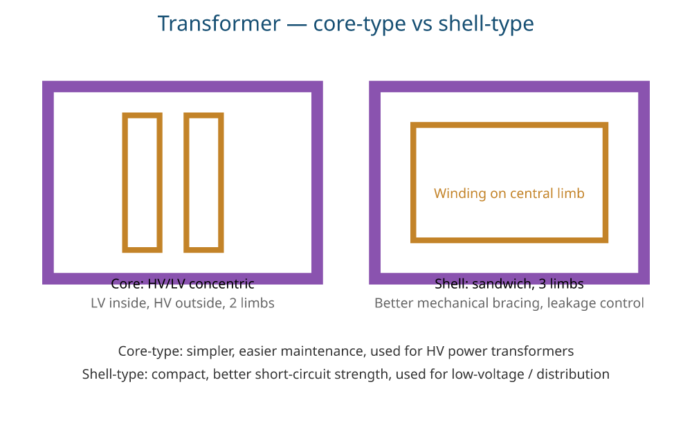
| મુદ્દો | Core-type | Shell-type |
|---|---|---|
| Core | Two-limb (window) core; windings core limbs ને ઘેરી લે | Three-limb core; core windings ને ઘેરી લે (central limb પર windings) |
| Windings | Concentric (LV અંદર, HV બહાર દરેક limb પર) | Sandwich / interleaved LV-HV sections central limb પર |
| Flux path | Single magnetic circuit | Outer limbs દ્વારા બે return paths (flux વહેંચાય) |
| Cooling / bracing | સરળ, natural cooling; maintenance માટે સારી accessibility | Short-circuit forces સામે વધુ સારું mechanical bracing; compact |
| ઉપયોગ | High-voltage power transformers | Low-voltage, distribution, special furnace transformers |
બંને એક જ EMF equation E=4.44fNΦm અને mutual induction સિદ્ધાંતને અનુસરે છે.
Q.3 (b) State and explain the working principle of DC Motor. (4 marks)પ્ર.3 (બ) DC મોટરનો કાર્યસિદ્ધાંત જણાવો અને સમજાવો. (૦૪ ગુણ)4 marks૦૪ ગુણ
Principle — force on current-carrying conductor in magnetic field (Fleming's left-hand rule): When a conductor carrying current I is placed in uniform flux density B, it experiences a force F = B·I·l (l = active length inside field). Direction by left hand: forefinger = field (N→S), middle finger = current, thumb = force/motion.
How motor works:
- Field poles produce main flux Φ in air-gap.
- Armature conductors carry current Ia (supplied via brushes/commutator).
- Each conductor experiences F = B I l ; opposite sides of a coil get opposite forces → turning torque T = B I l × radius.
- Commutator reverses current in each coil as it passes the neutral axis, so net torque remains in one direction — continuous rotation.
- Rotating armature also cuts flux → back EMF Eb induced (generator action inside motor) that limits current to Ia = (V−Eb)/Ra.
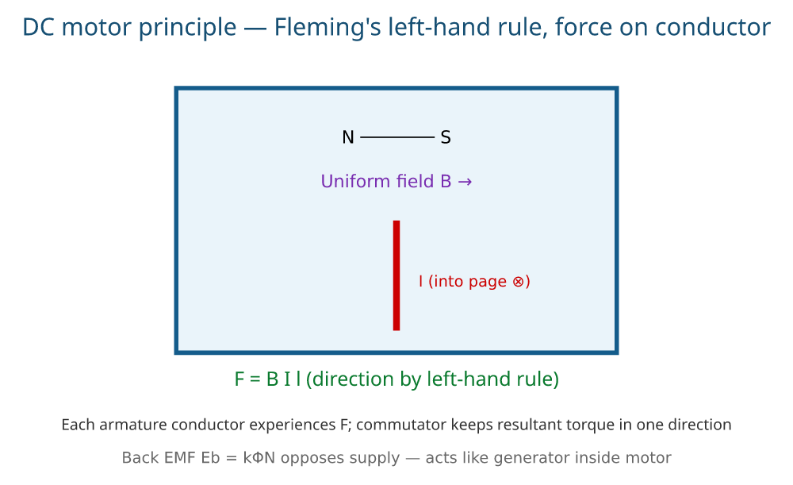
સિદ્ધાંત — magnetic field માં current ધરાવતા conductor પર બળ (Fleming's left-hand rule): જ્યારે current I ધરાવતો conductor uniform flux density B માં મૂકવામાં આવે ત્યારે તેના પર બળ F = B·I·l (l = field અંદર active length) લાગે છે. દિશા left hand થી: પહેલી આંગળી = field (N→S), વચલી આંગળી = current, અંગૂઠો = બળ/ગતિ.
મોટર કેવી રીતે કામ કરે છે:
- Field poles air-gap માં મુખ્ય flux Φ ઉત્પન્ન કરે.
- Armature conductors current Ia વહન કરે (brushes/commutator દ્વારા supply).
- દરેક conductor પર F = B I l બળ લાગે; coil ની વિરુદ્ધ બાજુઓ પર વિરુદ્ધ બળો → turning torque T = B I l × radius.
- Commutator દરેક coil neutral axis પસાર કરે ત્યારે current ઉલટાવી દે, તેથી net torque એક જ દિશામાં રહે — સતત rotation.
- ફરતો armature flux ને પણ કાપે → back EMF Eb induce થાય (મોટરની અંદર generator action) જે current ને Ia = (V−Eb)/Ra સુધી મર્યાદિત કરે.
Q.3 (c) Explain Open Circuit test of 1 Phase Transformer in Detail with figure. (7 marks)પ્ર.3 (ક) એક ફેઝ ટ્રાન્સફોર્મરનો ઓપન સર્કિટ ટેસ્ટ વિગતવાર સમજાવો અને આકૃતિ દોરો. (૦૭ ગુણ)7 marks૦૭ ગુણ
Purpose: Determine core (iron) loss and no-load (shunt) parameters R0, X0 (magnetising current, core-loss current). Performed with one winding open, rated voltage applied to the other (usually LV for safety/convenience).
Circuit / procedure:
- LV winding (say) connected to variable AC supply via voltmeter, ammeter, wattmeter; HV winding left open and guarded (dangerous induced voltage may appear).
- Apply rated voltage V0 (rated frequency) to LV side. Record no-load current I0 (2–5% of rated) and wattmeter reading W0.
- W0 ≈ iron loss Pi (copper loss I02R is negligible as I0 very small).
Calculations (phasor: V as reference):
Equivalent circuit: Shunt branch R0 in parallel with X0 across supply (referred to LV or HV by turns ratio squared).
Safety (must write): Guard open HV terminals (induced HV present), use correct voltage taps, discharge after test. Test is non-loading → no temperature rise concern but rated V/f must not be exceeded (overflux).
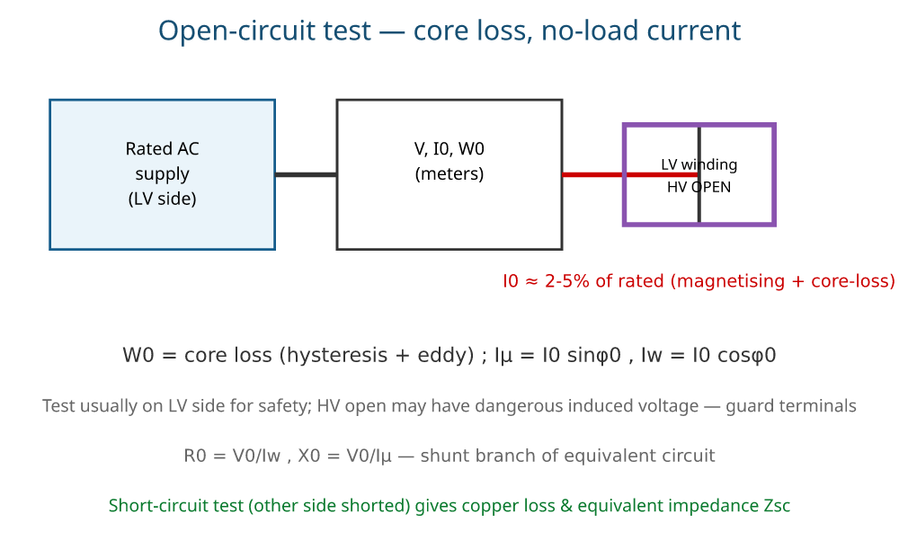
હેતુ: Core (iron) loss અને no-load (shunt) parameters R0, X0 (magnetising current, core-loss current) નક્કી કરવા. એક winding open રાખી, બીજી પર rated voltage આપીને કરવામાં આવે (સામાન્ય રીતે LV બાજુ safety/sગવડ માટે).
Circuit / પદ્ધતિ:
- LV winding (ધારો કે) ને variable AC supply સાથે voltmeter, ammeter, wattmeter દ્વારા જોડો; HV winding open અને guarded રાખો (જોખમી induced voltage આવી શકે).
- LV side પર rated voltage V0 (rated frequency) આપો. No-load current I0 (rated ના 2–5%) અને wattmeter reading W0 નોંધો.
- W0 ≈ iron loss Pi (copper loss I02R નજીવો કારણ કે I0 ખૂબ નાનો).
ગણતરીઓ (phasor: V reference):
Equivalent circuit: Shunt branch R0 // X0 supply ની આરપાર (turns ratio squared થી LV અથવા HV પર refer કરેલું).
Safety (લખવું જરૂરી): Open HV terminals ને guarded રાખો (induced HV હોય), સાચા voltage taps વાપરો, test પછી discharge કરો. આ test non-loading છે → temperature rise ની ચિંતા નથી પણ rated V/f થી વધુ ન આપો (overflux).
Q.3 (a) OR Define all-day efficiency of a transformer. (3 marks)પ્ર.3 (અ) OR ટ્રાન્સફોર્મરની ઑલ-ડે ઇફિશિયન્સીની વ્યાખ્યા આપો. (૦૩ ગુણ)3 marks૦૩ ગુણ
Definition: All-day (energy) efficiency ηall-day is the ratio of total energy delivered (kWh) to total energy input (kWh) over 24 hours, accounting for varying load and the fact that iron loss occurs all day (even at no-load) while copper loss varies as I2.
Relevance: Distribution transformers are lightly loaded most of the day (iron loss dominates). Design aims for Pi low and maximum efficiency near expected average load (not necessarily full-load).
Contrast: Commercial efficiency η = output / (output + losses) at a given instantaneous load; all-day is time-weighted energy efficiency.
વ્યાખ્યા: All-day (energy) efficiency ηall-day એટલે ૨૪ કલાક દરમિયાન આપેલી કુલ energy (kWh) અને અંદર લીધેલી કુલ energy (kWh) નો ગુણોત્તર, જેમાં બદલાતો load અને એ હકીકત ધ્યાને લેવાય છે કે iron loss આખો દિવસ (no-load પર પણ) થાય છે જ્યારે copper loss I2 પ્રમાણે બદલાય છે.
મહત્વ: Distribution transformers દિવસનો મોટાભાગ હળવા load પર રહે છે (iron loss પ્રભાવી). Design માં Pi ઓછું અને અપેક્ષિત સરેરાશ load ની નજીક maximum efficiency આવે તે રીતે બનાવાય છે (જરૂરી નથી કે full-load પર).
તફાવત: Commercial efficiency η = ચોક્કસ instantaneous load પર output / (output + losses); all-day એ time-weighted energy efficiency છે.
Q.3 (b) OR Derive the EMF equation of a transformer and state assumptions made. (4 marks)પ્ર.3 (બ) OR ટ્રાન્સફોર્મરનું EMF સમીકરણ મેળવો અને ઉપયોગમાં લેવાયેલી ધારણાઓ લખો. (૦૪ ગુણ)4 marks૦૪ ગુણ
Assumptions: Sinusoidal mutual flux Φ = Φm sin ωt, core flux same linking both windings (no leakage for ideal derivation), winding resistance/reactance neglected initially, sinusoidal supply frequency f (Hz).
Derivation:
- Φ = Φm sin ωt → dΦ/dt = ω Φm cos ωt = 2πf Φm cos ωt.
- Induced EMF per turn eturn = dΦ/dt (Faraday, N=1). Peak value Em-turn = 2πf Φm.
- For N turns: peak Em = N·2πf Φm. RMS E = Em/√2 = (2π/√2) f N Φm = 4.44 f N Φm.
Ratio: E1/E2 = N1/N2 (turns ratio). Mention if a = N1/N2 or k = N2/N1 used.
Note: Induced EMF is the internal EMF; terminal voltage V differs by impedance drops (V1 ≈ E1 + I1Z1, etc.).
ધારણાઓ: Sinusoidal mutual flux Φ = Φm sin ωt, બંને windings ને એક જ core flux link કરે (ideal derivation માટે leakage નહીં), શરૂઆતમાં winding resistance/reactance અવગણેલ, sinusoidal supply frequency f (Hz).
તારણ:
- Φ = Φm sin ωt → dΦ/dt = ω Φm cos ωt = 2πf Φm cos ωt.
- પ્રતિ turn induced EMF eturn = dΦ/dt (Faraday, N=1). Peak value Em-turn = 2πf Φm.
- N turns માટે: peak Em = N·2πf Φm. RMS E = Em/√2 = (2π/√2) f N Φm = 4.44 f N Φm.
Ratio: E1/E2 = N1/N2 (turns ratio). a = N1/N2 કે k = N2/N1 વાપર્યું તે લખો.
નોંધ: Induced EMF એ internal EMF છે; terminal voltage V impedance drops થી અલગ (V1 ≈ E1 + I1Z1 વગેરે).
Q.3 (c) OR Explain Brake Test for DC MOTOR in detail with diagram. (7 marks)પ્ર.3 (ક) OR ડી.સી. મોટર માટેનો બ્રેક ટેસ્ટ વિગતવાર સમજાવો અને આકૃતિ દોરો. (૦૭ ગુણ)7 marks૦૭ ગુણ
Purpose: Direct method to determine mechanical output, torque, efficiency and speed regulation under actual load. Common for small / medium DC motors (shunt, compound, series).
Setup (belt/pulley type): Motor shaft carries brake pulley/drum. Flexible belt/rope over pulley with two spring balances (weights W1, W2) — belt tension creates braking torque. Drum may be water-cooled. Supply via meters (V, I), speed measured by tachometer.
Procedure:
- Start motor with starter; run to rated speed at no-load (with minimal brake tension).
- Gradually tighten belt (increase W1−W2) → load torque increases → speed slightly falls; record V, I, N, W1, W2 at each load.
- Drum radius r (or pulley diameter D) known → torque T = (W1−W2) × r (if W in kg, multiply by g=9.81 to get Newtons).
- Output power Pout = 2π N T / 60 (watts, N in rpm). Input Pin = V·I (for shunt, includes field). Efficiency η = Pout/Pin ×100%.
- Plot efficiency, speed, torque vs load current — characteristic curves.
Limitations / precautions: Belt wear, heating, slip; limited to moderate power (heat dissipation); guard rotating parts; avoid sudden overload; keep cooling water flowing; don't exceed rated current.
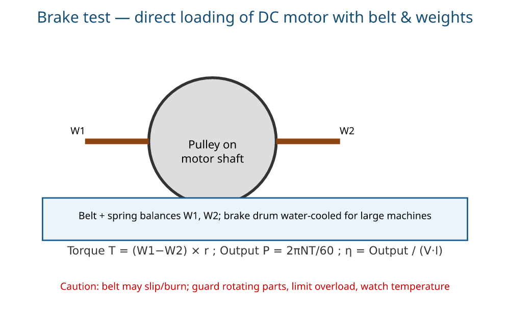
હેતુ: વાસ્તવિક load હેઠળ mechanical output, torque, efficiency અને speed regulation નક્કી કરવાની direct method. નાના / મધ્યમ DC motors (shunt, compound, series) માટે સામાન્ય.
Setup (belt/pulley type): Motor shaft પર brake pulley/drum હોય. Pulley પર flexible belt/rope બે spring balances (weights W1, W2) સાથે — belt tension braking torque બનાવે. Drum water-cooled હોઈ શકે. Supply meters (V, I) દ્વારા, speed tachometer થી માપાય.
પદ્ધતિ:
- Starter સાથે motor start કરો; no-load (minimal brake tension) પર rated speed સુધી ચલાવો.
- ધીમે ધીમે belt Tight કરો (W1−W2 વધારો) → load torque વધે → speed થોડો ઘટે; દરેક load પર V, I, N, W1, W2 નોંધો.
- Drum radius r (અથવા pulley diameter D) ખબર હોય → torque T = (W1−W2) × r (જો W kg માં હોય તો Newton માટે g=9.81 ગુણો).
- Output power Pout = 2π N T / 60 (watts, N rpm માં). Input Pin = V·I (shunt માટે field સહિત). Efficiency η = Pout/Pin ×100%.
- Efficiency, speed, torque vs load current ના characteristic curves plot કરો.
મર્યાદાઓ / સાવચેતીઓ: Belt wear, heating, slip; મધ્યમ power સુધી મર્યાદિત (heat dissipation); ફરતા ભાગોને guard કરો; અચાનક overload ટાળો; cooling water ચાલુ રાખો; rated current થી વધુ ન જાવ.
Q4 · Tests, Auto-transformers and Lossesપ્ર.4 · ટેસ્ટ, ઓટો-ટ્રાન્સફોર્મર અને નુકસાન
Q.4 (a) Draw only circuit diagram for direct load test of single phase transformer. (3 marks)પ્ર.4 (અ) સિંગલ ફેઝ ટ્રાન્સફોર્મર માટે ડાયરેક્ટ લોડ ટેસ્ટની માત્ર સર્કિટ આકૃતિ દોરો. (૦૩ ગુણ)3 marks૦૩ ગુણ
As per question — circuit diagram only is required. Description is additional for understanding (write minimal in exam).
Primary: AC supply → wattmeter + voltmeter + ammeter → primary winding. Secondary: secondary winding → ammeter + voltmeter + wattmeter → variable load (resistive lamp bank / rheostat).
Readings: V1, I1, W1 (input), V2, I2, W2 (output). From them efficiency and regulation are found. Load varied from no-load to ~125% for curves.
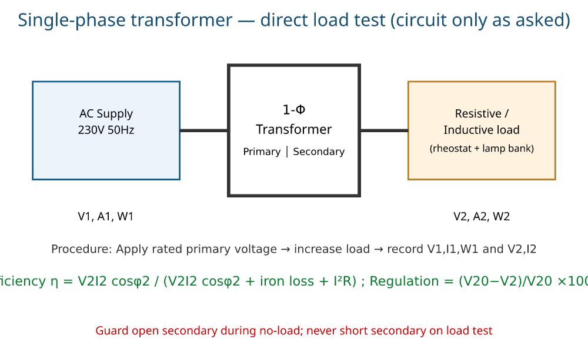
પ્રશ્ન મુજબ — માત્ર સર્કિટ આકૃતિ જરૂરી છે. વર્ણન વધારાની સમજ માટે છે (પરીક્ષામાં ન્યૂનતમ લખો).
Primary: AC supply → wattmeter + voltmeter + ammeter → primary winding. Secondary: secondary winding → ammeter + voltmeter + wattmeter → variable load (resistive lamp bank / rheostat).
Readings: V1, I1, W1 (input), V2, I2, W2 (output). તેમાંથી efficiency અને regulation મળે. Load ને no-load થી ~125% સુધી બદલીને curves બનાવાય.
Q.4 (b) State and explain construction of auto transformer. (4 marks)પ્ર.4 (બ) ઓટો-ટ્રાન્સફોર્મરનું બંધારણ જણાવો અને સમજાવો. (૦૪ ગુણ)4 marks૦૪ ગુણ
Construction: One continuous winding on a laminated core with a tap (or movable brush for variac). Part of the winding is common to both primary and secondary — hence auto (self) transformer.
- Single winding with tap B: Total turns A–C = N1 (primary), tapped turns B–C = N2 (secondary) for step-down (reverse for step-up).
- Core: Same as 2-winding transformer (core-type or shell-type), but only one winding assembly.
- Conductor: Common section B–C carries difference current I2−I1 (much smaller than full secondary current) → copper saving.
Key relations (ideal): V1/V2 = N1/N2 = a ; I1/I2 = 1/a. Copper saving ∝ a/(a+1) compared to 2-winding of same rating.
Advantages / limitations: Less copper, smaller, lighter, better efficiency, better voltage regulation — best when a ≈ 1 (e.g., 230V → 200V). No electrical isolation — HV fault transfers to LV, not allowed for safety isolation or high ratio.
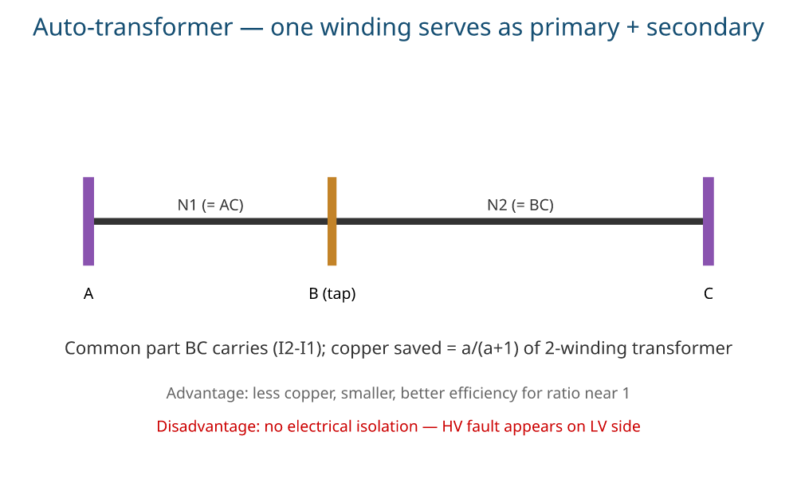
બંધારણ: Laminated core પર એક સતત winding tap (અથવા variac માટે movable brush) સાથે. Winding નો એક ભાગ primary અને secondary બંને માટે common છે — તેથી auto (self) transformer.
- Tap B સાથે એક winding: કુલ turns A–C = N1 (primary), tapped turns B–C = N2 (secondary) step-down માટે (step-up માટે ઉલટું).
- Core: 2-winding transformer જેવો જ (core-type અથવા shell-type), પણ માત્ર એક winding assembly.
- Conductor: Common section B–C difference current I2−I1 વહન કરે (પૂરા secondary current કરતાં ઘણો નાનો) → copper બચત.
મુખ્ય સંબંધો (ideal): V1/V2 = N1/N2 = a ; I1/I2 = 1/a. 2-winding ની સરખામણીએ Copper saving ∝ a/(a+1).
ફાયદા / મર્યાદાઓ: ઓછું copper, નાનું, હળવું, સારી efficiency, સારું voltage regulation — a ≈ 1 હોય ત્યારે શ્રેષ્ઠ (દા.ત. 230V → 200V). Electrical isolation નથી — HV fault LV પર જાય, safety isolation અથવા મોટા ratio માટે ન વપરાય.
Q.4 (c) The turn ratio of a 10 kVA single phase transformer is 300/30. Primary connected to 1500 V, 50 Hz supply. Find secondary open-circuit voltage and full-load primary and secondary currents. (7 marks)પ્ર.4 (ક) 10 kVA સિંગલ ફેઝ ટ્રાન્સફોર્મરનો ટર્ન રેશિયો 300/30 છે. પ્રાઇમરીને 1500 V, 50 Hz supply સાથે જોડેલ છે. ઓપન સર્કિટ વખતે સેકન્ડરી વૉલ્ટેજ અને ફુલ-લોડ પ્રાઇમરી/સેકન્ડરી કરંટ શોધો. (૦૭ ગુણ)7 marks૦૭ ગુણ
Given: Srated = 10 kVA = 10,000 VA, N1/N2 = 300/30 = 10, V1 = 1500 V (primary, 50 Hz).
Step 1 — Turns ratio interpretation
Step 2 — Secondary open-circuit voltage (ideal, no drop, no-load)
Practical note: Actual loaded secondary V2 slightly less due to impedance drops; open-circuit value is the induced EMF E2.
Step 3 — Full-load currents (apparent power basis, ideal)
Checks: S = V1I1 = 1500×6.67 = 10,005 VA ✓ ; S = V2I2 = 150×66.67 = 10,000 VA ✓ ; I1/I2 = 1/a ✓.
આપેલું: Srated = 10 kVA = 10,000 VA, N1/N2 = 300/30 = 10, V1 = 1500 V (primary, 50 Hz).
Step 1 — Turns ratio
Step 2 — Secondary open-circuit voltage (ideal, no drop, no-load)
વ્યવહારુ નોંધ: વાસ્તવિક loaded secondary V2 impedance drops ને કારણે થોડો ઓછો; open-circuit value એ induced EMF E2 છે.
Step 3 — Full-load currents (apparent power આધારે, ideal)
ચકાસણી: S = V1I1 = 1500×6.67 = 10,005 VA ✓ ; S = V2I2 = 150×66.67 = 10,000 VA ✓ ; I1/I2 = 1/a ✓.
Q.4 (a) OR What will happen when transformer is connected to DC supply? (3 marks)પ્ર.4 (અ) OR ટ્રાન્સફોર્મરને DC supply આપવામાં આવે તો શું થાય? (૦૩ ગુણ)3 marks૦૩ ગુણ
Principle violated: Transformer works on mutual induction with time-varying flux (dΦ/dt). DC gives steady flux after initial transient — no induction after settling.
- No induced EMF in secondary: After DC switch-on transient, flux becomes constant → dΦ/dt =0 → no E2. Only a brief pulse at switching.
- Primary draws huge current: Impedance to DC is just winding resistance R (reactance X = 2πfL =0 for DC). I = Vdc/R → very large (rated AC current is limited by inductive reactance). Winding overheats, may burn, core saturates.
- Core saturation: DC flux may drive core into deep saturation → magnetising current even larger, possible mechanical forces.
Conclusion: Transformer must not be connected to DC (unless specifically designed as DC reactor / special pulse transformer with controlled switching). It will overheat and fail.
સિદ્ધાંત ભંગ: Transformer time-varying flux (dΦ/dt) સાથે mutual induction પર કામ કરે. DC steady flux આપે છે — settle થયા પછી induction નથી.
- Secondary માં કોઈ induced EMF નહીં: DC ચાલુ કર્યા પછીના transient પછી flux constant → dΦ/dt =0 → E2 નહીં. ફક્ત switching વખતે ટૂંકી pulse.
- Primary માં ખૂબ મોટો current: DC માટે impedance માત્ર winding resistance R છે (reactance X = 2πfL =0 DC માટે). I = Vdc/R → ખૂબ મોટો (rated AC current inductive reactance થી મર્યાદિત હોય). Winding ગરમ થઈ બળી શકે, core saturate થાય.
- Core saturation: DC flux core ને deep saturation માં લઈ જઈ શકે → magnetising current વધુ મોટો, mechanical forces શક્ય.
નિષ્કર્ષ: Transformer ને DC સાથે ન જોડવું (જ્યાં સુધી ખાસ DC reactor / special pulse transformer તરીકે design ન હોય). તે ગરમ થઈ નિષ્ફળ જશે.
Q.4 (b) OR State and explain different losses in Transformer. (4 marks)પ્ર.4 (બ) OR ટ્રાન્સફોર્મરમાં થતા વિવિધ નુકસાનો (Losses) જણાવો અને સમજાવો. (૦૪ ગુણ)4 marks૦૪ ગુણ
Two main categories (as per 4M: list + explain):
- Core (iron) losses — constant (at rated V/f):
- Hysteresis loss: Energy to reverse magnetisation each cycle ∝ f·Bmn (Steinmetz, n≈1.6). Reduced by CRGO laminations, proper flux density.
- Eddy-current loss: Circulating currents in core laminations ∝ f2Bm2·t2/ρ. Reduced by thin insulated laminations, high resistivity silicon steel.
- Measured by open-circuit test (W0 ≈ Pi).
- Copper (I2R) losses — variable with load:
- Pcu = I12R1 + I22R2 = I12Req (referred). Proportional to square of load current.
- Measured by short-circuit test (rated current, reduced voltage). Increases with temperature (R rises).
Other (minor) losses: Stray load losses (leakage flux in tank/windings), dielectric losses, mechanical (cooling fans/pumps in large units). Efficiency η = output/(output + Pi + Pcu). Maximum efficiency when Pi = Pcu.
બે મુખ્ય પ્રકાર (૦૪ ગુણ મુજબ: list + સમજાવો):
- Core (iron) losses — constant (rated V/f પર):
- Hysteresis loss: દરેક cycle માં magnetisation ઉલટાવવા માટે energy ∝ f·Bmn (Steinmetz, n≈1.6). CRGO laminations, યોગ્ય flux density થી ઘટે.
- Eddy-current loss: Core laminations માં circulating currents ∝ f2Bm2·t2/ρ. પાતળી insulated laminations, high resistivity silicon steel થી ઘટે.
- Open-circuit test થી માપાય (W0 ≈ Pi).
- Copper (I2R) losses — load સાથે બદલાતું:
- Pcu = I12R1 + I22R2 = I12Req (referred). Load current ના square ના પ્રમાણમાં.
- Short-circuit test થી માપાય (rated current, ઓછા voltage). Temperature સાથે વધે (R વધે).
અન્ય (નાના) losses: Stray load losses (tank/windings માં leakage flux), dielectric losses, mechanical (મોટા units માં cooling fans/pumps). Efficiency η = output/(output + Pi + Pcu). Pi = Pcu ત્યારે maximum efficiency.
Q.4 (c) OR Develop vector diagrams for lagging and leading power factor on load. (7 marks)પ્ર.4 (ક) OR લોડ પર લેગિંગ અને લીડિંગ પાવર ફેક્ટર માટે વેક્ટર આકૃતિ (Vector Diagram) વિકસાવો. (૦૭ ગુણ)7 marks૦૭ ગુણ
Reference: Primary referred equivalent (Req, Xeq) and ideal turns ratio. No-load current I0 often neglected for simplified vector diagram (or included as small I0 at angle φ0). Load power factor cosφ2 is lagging (inductive) or leading (capacitive).
Phasor construction (KVL: V1 = V2' + I2'·(Req + jXeq)):
- Draw V2' (referred secondary terminal voltage) as reference phasor.
- Draw load current I2' lagging V2' by φ2 (lagging) or leading by φ2 (leading).
- Add resistive drop I2'Req in phase with I2' ; add reactive drop jI2'Xeq perpendicular to I2' (90° lead).
- Vector sum gives primary voltage V1. For lagging, V1 > V2' (voltage drop); for large leading, V1 may be < V2' (voltage rise / Ferranti-like).
Lagging diagram: I2' behind V2' ; voltage drops add to increase V1 magnitude and shift phase angle φ1 slightly different from φ2.
Leading diagram: I2' ahead of V2' ; reactive drop may partially cancel, causing regulation negative (voltage rise at load).
These diagrams explain regulation and power factor seen from primary. Include both cases for 7M — label I2'R, jI2'X, V1, φ2 clearly.
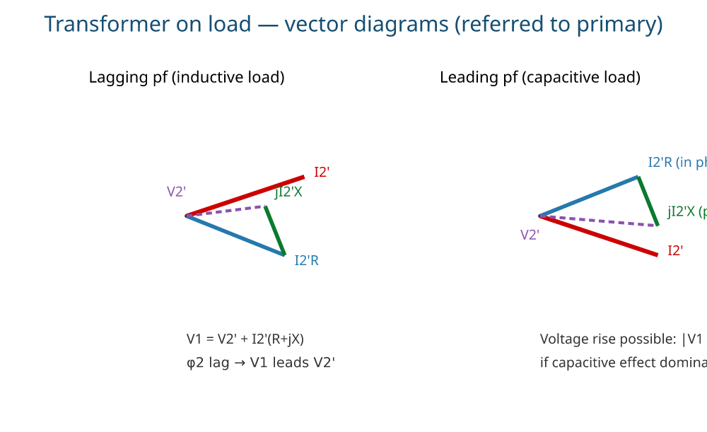
Reference: Primary referred equivalent (Req, Xeq) અને ideal turns ratio. Simplified vector diagram માટે No-load current I0 ઘણીવાર અવગણાય (અથવા નાનો I0 angle φ0 સાથે). Load power factor cosφ2 lagging (inductive) અથવા leading (capacitive) હોય.
Phasor રચના (KVL: V1 = V2' + I2'·(Req + jXeq)):
- V2' (referred secondary terminal voltage) ને reference phasor તરીકે દોરો.
- Load current I2' ને V2' થી φ2 પાછળ (lagging) અથવા આગળ (leading) દોરો.
- Resistive drop I2'Req ને I2' ની દિશામાં ઉમેરો; reactive drop jI2'Xeq ને I2' થી 90° lead પર ઉમેરો.
- Vector સરવાળો primary voltage V1 આપે. Lagging માટે V1 > V2' (voltage drop); મોટા leading માટે V1 < V2' થઈ શકે (voltage rise / Ferranti-like).
Lagging diagram: I2' V2' થી પાછળ ; voltage drops ઉમેરાતા V1 magnitude વધે અને phase angle φ1 φ2 થી થોડો અલગ પડે.
Leading diagram: I2' V2' થી આગળ ; reactive drop અંશતઃ cancel થાય, regulation negative (load પર voltage rise) થઈ શકે.
આ diagrams regulation અને primary થી દેખાતો power factor સમજાવે. ૦૭ ગુણ માટે બંને cases લેબલ સાથે દોરો — I2'R, jI2'X, V1, φ2 સ્પષ્ટ લખો.
Q5 · Three-Phase Transformers, Protection and Coolingપ્ર.5 · Three-Phase ટ્રાન્સફોર્મર, Protection અને Cooling
Q.5 (a) Explain vector group notation (e.g., Dyn11) and its importance. (3 marks)પ્ર.5 (અ) વેક્ટર ગ્રુપ માટે વપરાતા સિમ્બોલ (Dyn11 ઇત્યાદિ) અને તેનું મહત્વ સમજાવો. (૦૩ ગુણ)3 marks૦૩ ગુણ
Notation (IEC 60076): Example Dyn11:
- D — HV winding connection: D=Delta, Y=Star, Z=Zig-zag (upper-case = HV), N = brought-out neutral.
- y — LV winding connection: d/y/z (lower-case = LV), n = LV neutral.
- n — LV neutral brought out.
- 11 — Clock number: LV phase voltage position on clock when HV is at 12 o'clock. 11 ×30° = 330° (LV lags HV by 30°). 0 = no phase shift.
Importance:
- Determines if transformers can be paralleled (same vector group required, or compatible with known shift).
- Affects phase sequence, neutral availability for earthing/unbalanced loads, protection relay phasing, and fault current paths.
- Common groups: Yy0, Dd0, Yd11, Dy11, Yz11, Dz0. Distribution often uses Dyn11 (HV delta blocks zero-sequence, LV star provides neutral).
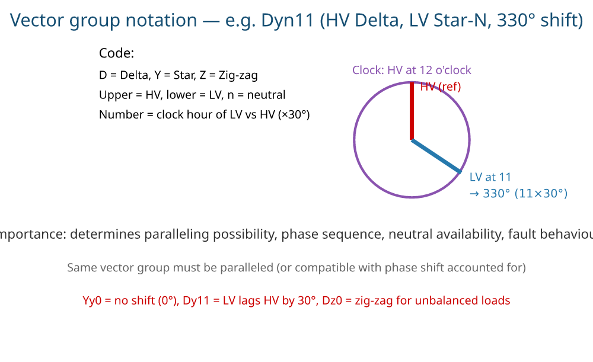
Notation (IEC 60076): ઉદાહરણ Dyn11:
- D — HV winding connection: D=Delta, Y=Star, Z=Zig-zag (upper-case = HV), N = બહાર કાઢેલ neutral.
- y — LV winding connection: d/y/z (lower-case = LV), n = LV neutral.
- n — LV neutral બહાર કાઢેલ છે.
- 11 — Clock number: HV 12 o'clock પર હોય ત્યારે LV phase voltage ની clock પર position. 11 ×30° = 330° (LV HV થી 30° પાછળ). 0 = કોઈ phase shift નહીં.
મહત્વ:
- Transformers parallel કરી શકાય કે નહીં તે નક્કી કરે (એ જ vector group જોઈએ, અથવા જાણીતા shift સાથે compatible).
- Phase sequence, earthing/unbalanced loads માટે neutral ની ઉપલબ્ધતા, protection relay phasing અને fault current paths પર અસર કરે.
- સામાન્ય groups: Yy0, Dd0, Yd11, Dy11, Yz11, Dz0. Distribution માં ઘણીવાર Dyn11 (HV delta zero-sequence ને block કરે, LV star neutral આપે).
Q.5 (b) Draw a neat labelled diagram of Buchholz Relay and state its function. (4 marks)પ્ર.5 (બ) સ્વચ્છ લેબલવાળી આકૃતિ સાથે બુચહોલ્ઝ રીલે દોરો અને તેનું કાર્ય લખો. (૦૪ ગુણ)4 marks૦૪ ગુણ
Location: In the pipe between main tank and conservator, inclined slightly (oil side to conservator upward). Contains oil from tank.
Elements: Upper float with mercury switch (alarm), lower flap/bucket with trip contact, gas vent valve, test button.
Function (two-stage):
- Slow incipient faults (overheating, minor arcing, insulation decomposition): Gases (H2, CH4, C2H2) generated slowly → bubbles rise along inclined pipe → collect in relay chamber → oil level in relay falls → upper float tilts → alarm (and gas sample can be taken for analysis — colour/smell indicates fault type).
- Severe faults (heavy short-circuit, major arc): Sudden oil surge / pressure wave from tank to conservator → pushes lower flap → activates trip → circuit breaker opens → transformer isolated.
Protects oil-immersed power transformers (typically ≥1 MVA with conservator). Not used on small hermetically sealed distribution transformers without conservator.
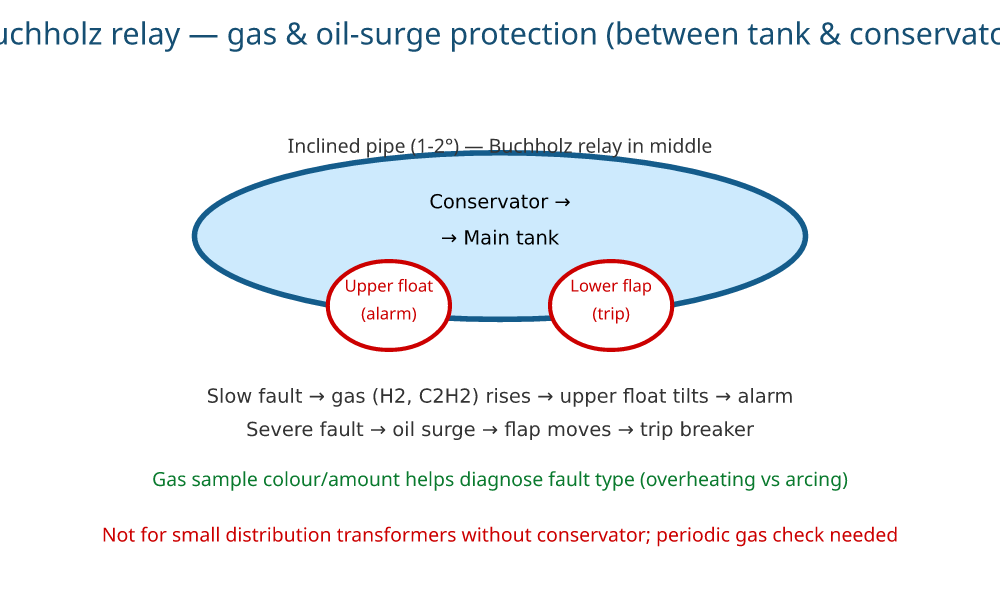
સ્થાન: Main tank અને conservator વચ્ચેની pipe માં, થોડું ઢાળ (oil side થી conservator તરફ ઉપર). અંદર tank નું oil હોય.
ભાગો: Mercury switch સાથે ઉપરનો float (alarm), trip contact સાથે નીચેનો flap/bucket, gas vent valve, test button.
કાર્ય (બે-stage):
- ધીમા incipient faults (overheating, નાનો arcing, insulation decomposition): ધીમે ગેસ (H2, CH4, C2H2) ઉત્પન્ન → bubbles ઢાળવાળી pipe સાથે ઉપર જાય → relay chamber માં ભેગા થાય → relay માં oil level ઘટે → ઉપરનો float ઝુકે → alarm (અને gas sample લઈને analysis કરી શકાય — રંગ/ગંધ fault નો પ્રકાર બતાવે).
- ગંભીર faults (ભારે short-circuit, મોટો arc): Tank થી conservator તરફ અચાનક oil surge / pressure wave → નીચેનો flap ધકેલાય → trip સક્રિય → circuit breaker ખુલે → transformer isolated થાય.
Oil-immersed power transformers (સામાન્ય રીતે conservator સાથે ≥1 MVA) ને protect કરે. Conservator વગરના નાના hermetically sealed distribution transformers પર ન વપરાય.
Q.5 (c) A Y–Δ three-phase transformer has turns ratio 1.5:1. Y-side line voltage 11 kV. It delivers 500 kVA at 0.8 pf lag on Δ-side. Find (i) line & phase voltages both sides (ii) line currents both sides (iii) kW output. (7 marks)પ્ર.5 (ક) Y–Δ 3-ફેઝ ટ્રાન્સફોર્મરનો ટર્ન રેશિયો 1.5:1 છે. Y-બાજુએ લાઇન વૉલ્ટેજ 11 kV છે. Δ-બાજુએ 0.8 pf lag પર 500 kVA અપાય છે. (i) બંને બાજુના લાઇન/ફેઝ વૉલ્ટેજ, (ii) લાઇન કરંટ અને (iii) kW આઉટપુટ શોધો. (૦૭ ગુણ)7 marks૦૭ ગુણ
Assumption (must state): Turns ratio 1.5:1 is per-phase NY/NΔ = 1.5 (Y = primary/HV = 11 kV, Δ = secondary/LV). Ideal transformer (no losses, V ∝ N).
(i) Voltages
If ratio interpreted as line-voltage ratio, VL,Δ would be 11/1.5=7.33 kV — less likely for typical Y–Δ; state assumption.
(ii) Line currents (power invariance S = √3 VL IL)
Phase currents: Iph,Y = IL,Y = 26.3 A (Y) ; Iph,Δ = IL,Δ/√3 = 68.2/1.732 = 39.4 A.
(iii) kW output (active power)
ધારણા (લખવી જરૂરી): Turns ratio 1.5:1 એ per-phase NY/NΔ = 1.5 છે (Y = primary/HV = 11 kV, Δ = secondary/LV). Ideal transformer (કોઈ losses નહીં, V ∝ N).
(i) Voltages
જો ratio ને line-voltage ratio તરીકે લેવાય તો VL,Δ = 11/1.5=7.33 kV થાય — લાક્ષણિક Y–Δ માટે ઓછી શક્યતા; ધારણા લખો.
(ii) Line currents (power invariance S = √3 VL IL)
Phase currents: Iph,Y = IL,Y = 26.3 A (Y) ; Iph,Δ = IL,Δ/√3 = 68.2/1.732 = 39.4 A.
(iii) kW output (active power)
Q.5 (a) OR List any six conditions required for the successful parallel operation of three-phase transformers. (3 marks)પ્ર.5 (અ) OR ત્રણ ફેઝ ટ્રાન્સફોર્મરના સફળ પેરેલલ ઓપરેશન માટે જરૂરી કોઈપણ છ શરતો લખો. (૦૩ ગુણ)3 marks૦૩ ગુણ
Six conditions (any six for full marks, all are examined):
- Same voltage ratio (turns ratio) — equal no-load secondary voltages; otherwise circulating current flows even at no-load.
- Same polarity / correct phase sequence — primaries and secondaries must be connected with matching polarity and phase order; wrong sequence → short-circuit.
- Same vector group (phase displacement) — HV-LV phase shift must be identical (e.g., both Dyn11); otherwise large circulating current.
- Same percentage impedance (and X/R ratio) — to share load proportional to kVA; mismatched impedance → one transformer overloaded.
- Same kVA / voltage rating and frequency — practical requirement; different ratings possible if impedance inversely proportional to kVA.
- Same tap changer position / regulation — on-load taps must correspond; different taps create voltage difference → circulating current.
- Additional (often accepted): Same neutral earthing, proper bus-bar connections, adequate short-circuit capacity.
છ શરતો (કોઈપણ છ લખો તો પૂરા ગુણ, બધી ચકાસાય):
- એક જ voltage ratio (turns ratio) — સમાન no-load secondary voltages; નહીં તો no-load પર પણ circulating current વહે.
- એક જ polarity / સાચો phase sequence — primaries અને secondaries ને matching polarity અને phase order સાથે જોડવા; ખોટો sequence → short-circuit.
- એક જ vector group (phase displacement) — HV-LV phase shift સમાન (દા.ત. બંને Dyn11); નહીં તો મોટો circulating current.
- એક જ percentage impedance (અને X/R ratio) — load kVA ના પ્રમાણમાં વહેંચાય; impedance અલગ → એક transformer overload.
- એક જ kVA / voltage rating અને frequency — વ્યવહારુ જરૂરિયાત; impedance kVA ના વ્યસ્ત પ્રમાણમાં હોય તો અલગ ratings શક્ય.
- એક જ tap changer position / regulation — on-load taps અનુરૂપ હોવા; અલગ taps થી voltage તફાવત → circulating current.
- વધારાની (ઘણીવાર સ્વીકૃત): એક જ neutral earthing, યોગ્ય bus-bar connections, પૂરતી short-circuit capacity.
Q.5 (b) OR Explain the bank of three single-phase transformers and the single three-phase transformer unit. State two advantages of each arrangement. (4 marks)પ્ર.5 (બ) OR ત્રણ સિંગલ-ફેઝ ટ્રાન્સફોર્મરની બેંક અને એક 3-ફેઝ ટ્રાન્સફોર્મર એકમ સમજાવો. બંને વ્યવસ્થાના બે-બે લાભો લખો. (૦૪ ગુણ)4 marks૦૪ ગુણ
Bank of three single-phase transformers: Three identical 1-Φ units connected externally (Y-Y, Δ-Δ, Y-Δ, Δ-Y) to form a 3-Φ system. Each has its own core and tank; connections made externally. Can be operated open-delta (two units) at 58% capacity if one fails.
Single three-phase transformer unit: One core with three limbs (three-limb core-type) or five-limb, all windings in one tank, internally connected for desired vector group.
| Arrangement | Two advantages |
|---|---|
| Bank of 3×1-Φ | 1. One spare unit of same rating can replace any failed unit; open-delta operation possible with two units. 2. Easier to transport/handle (smaller individual weight), per-unit repair possible, flexible for additions. |
| Single 3-Φ unit | 1. Lower cost, less floor space, higher efficiency (less iron), factory-assembled/tested as one unit. 2. Simpler buswork, better protection integration, lower maintenance (one tank, less oil). |
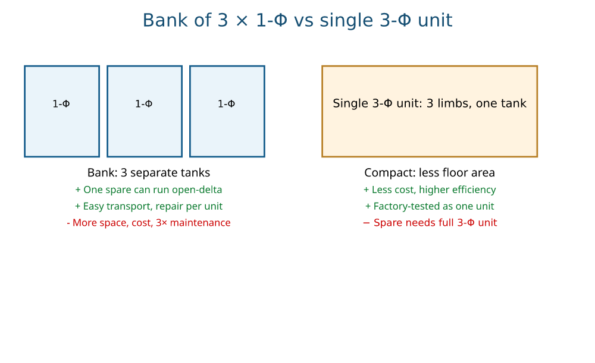
ત્રણ સિંગલ-ફેઝ ટ્રાન્સફોર્મરની બેંક: ત્રણ સમાન 1-Φ units ને બહારથી જોડી (Y-Y, Δ-Δ, Y-Δ, Δ-Y) ને 3-Φ system બનાવાય. દરેકનું પોતાનું core અને tank; connections બહારથી થાય. એક fail થાય તો બે units થી open-delta (58% capacity) પર ચલાવી શકાય.
એક 3-ફેઝ ટ્રાન્સફોર્મર એકમ: ત્રણ limbs (three-limb core-type) અથવા five-limb સાથે એક core, બધી windings એક tank માં, ઇચ્છિત vector group માટે અંદરથી જોડેલ.
| વ્યવસ્થા | બે લાભો |
|---|---|
| Bank of 3×1-Φ | 1. એ જ rating નો એક spare unit કોઈપણ fail થયેલ unit ને replace કરી શકે; બે units થી open-delta operation શક્ય. 2. Transport/handle સરળ (વ્યક્તિગત વજન ઓછું), per-unit repair શક્ય, વધારા માટે flexible. |
| Single 3-Φ unit | 1. ઓછી cost, ઓછી floor space, વધુ efficiency (ઓછું iron), factory માં એક unit તરીકે assembled/tested. 2. સરળ buswork, સારું protection integration, ઓછું maintenance (એક tank, ઓછું oil). |
Q.5 (c) OR State the need of cooling in transformers and explain any two methods of cooling. (7 marks)પ્ર.5 (ક) OR ટ્રાન્સફોર્મરમાં કૂલિંગની જરૂરિયાત લખો અને કૂલિંગની કોઈપણ બે પદ્ધતિઓ સમજાવો. (૦૭ ગુણ)7 marks૦૭ ગુણ
Need of cooling:
- Losses (I2R copper + core hysteresis/eddy) → heat. Without cooling, winding/hot-spot temperature rises → insulation (paper/oil) ages rapidly (Arrhenius rule: life halves per ~8–10°C rise) → failure, fire risk.
- Cooling maintains temperature within rated limits (e.g., 55°C/65°C rise over ambient), allows rated loading, prevents oil decomposition and gas formation, ensures reliable life (20+ years).
- Large power transformers generate megawatts of loss heat — natural convection insufficient; forced cooling and radiators needed.
Any two methods (explain any two for 7M — include diagram concept):
- ONAN — Oil Natural, Air Natural: Oil heated by windings rises by thermosiphon, flows through external radiators/tubes, cooled by natural air convection, returns to bottom. Silent, no pumps/fans, used up to ~10 MVA. Requires conservator + breather (silica gel) + Buchholz relay.
- ONAF — Oil Natural, Air Forced: Same oil circulation, but fans blow air over radiators. Thermostat-controlled fans start at high load/temperature. Higher rating (up to ~50 MVA) with same tank, compact radiators. Noise from fans.
- Alternatives accepted: OFAF (Oil Forced Air Forced — pumps + fans), OFWF (Oil Forced Water Forced — oil-water heat exchanger for very large units), dry-type AN/AF (air blast) for indoor distribution.
Monitoring: Oil level, winding temperature indicator (WTI), oil temperature indicator (OTI), pressure relief device, silica gel breather (blue→pink when moist).
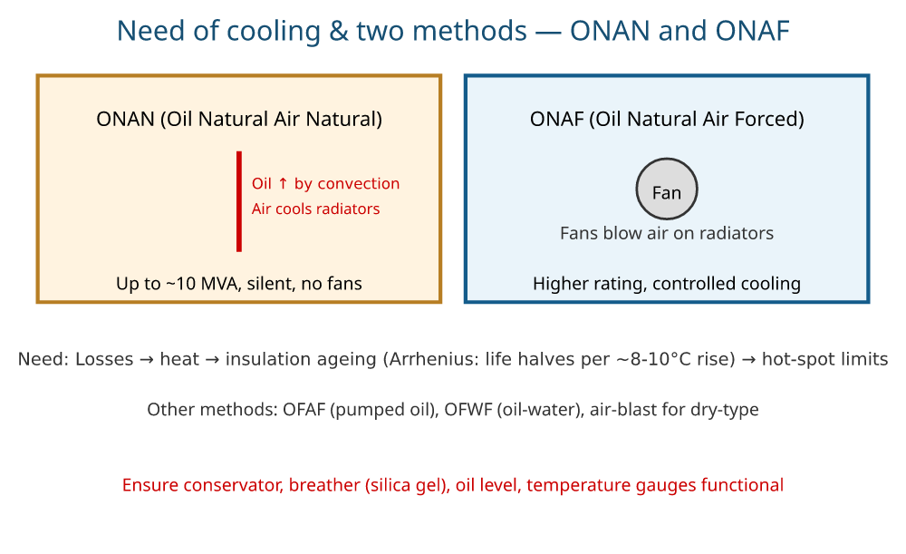
કૂલિંગની જરૂરિયાત:
- Losses (I2R copper + core hysteresis/eddy) → ઉષ્મા. Cooling વગર winding/hot-spot temperature વધે → insulation (paper/oil) ઝડપથી જૂનું થાય (Arrhenius rule: દર ~8–10°C વધારે life અડધી) → failure, આગનું જોખમ.
- Cooling temperature ને rated limits (દા.ત. ambient થી 55°C/65°C rise) માં રાખે, rated loading ને મંજૂરી આપે, oil decomposition અને gas formation અટકાવે, વિશ્વસનીય life (20+ વર્ષ) સુનિશ્ચિત કરે.
- મોટા power transformers માં megawatts નો loss heat ઉત્પન્ન થાય — natural convection પૂરતું નથી; forced cooling અને radiators જોઈએ.
કોઈપણ બે પદ્ધતિઓ (૦૭ ગુણ માટે કોઈપણ બે સમજાવો — diagram concept સહિત):
- ONAN — Oil Natural, Air Natural: Windings થી ગરમ થયેલ oil thermosiphon થી ઉપર જાય, બહારના radiators/tubes માંથી પસાર થાય, natural air convection થી ઠંડુ થાય, નીચે પાછું આવે. શાંત, pumps/fans નહીં, ~10 MVA સુધી વપરાય. Conservator + breather (silica gel) + Buchholz relay જરૂરી.
- ONAF — Oil Natural, Air Forced: એ જ oil circulation, પણ fans radiators પર હવા ફેંકે. Thermostat-controlled fans વધુ load/temperature પર ચાલુ થાય. સમાન tank સાથે વધુ rating (~50 MVA સુધી), compact radiators. Fans નો અવાજ.
- વૈકલ્પિક સ્વીકૃત: OFAF (Oil Forced Air Forced — pumps + fans), OFWF (Oil Forced Water Forced — ખૂબ મોટા units માટે oil-water heat exchanger), dry-type AN/AF (indoor distribution માટે air blast).
Monitoring: Oil level, winding temperature indicator (WTI), oil temperature indicator (OTI), pressure relief device, silica gel breather (ભીનું થતાં blue→pink).